ホーム ＞ 発破職人ブーモル
日本語 ・ English ・ Deutsch ・ 한국어 ・ 繁體中文
ビルを、
まっすぐ崩せ。
ビルのどこに爆弾を仕掛ければ、敷地の中にまっすぐ崩れる？ 柱と重さを読んで置き場所を決める、物理で崩れる爆破解体パズルです。
- 無料
- 全100面
- 遊んでいる画面に広告なし
- ストーリー全10話
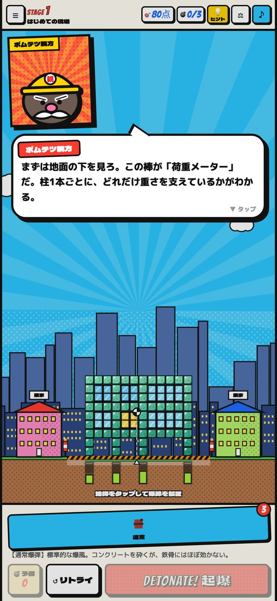
こんな人に
発破職人ブーモル は、こんな場面で役に立ちます。
- パズルが好き一手で結果が大きく変わる、読み合いのパズルです。
- スカッとしたいビルがストンと沈む瞬間は、何度見ても気持ちいい。
- すきま時間に1面は数分。気になる面だけ、何度でもやり直せます。
- とことん極めたい星3つ、職人メダル、パーフェクトを集めて。
できること
仕掛けて、起爆して、見届ける
ビルの柱や梁を見て、爆弾を置く場所を決めます。仕掛けた爆弾は全部同時に爆発。あとはビルが崩れていくのを見届けるだけです。
瓦礫がオレンジの敷地の中にどれだけ収まったかで「爆芸点」が決まります。隣の家を傷つけないことも大事です。
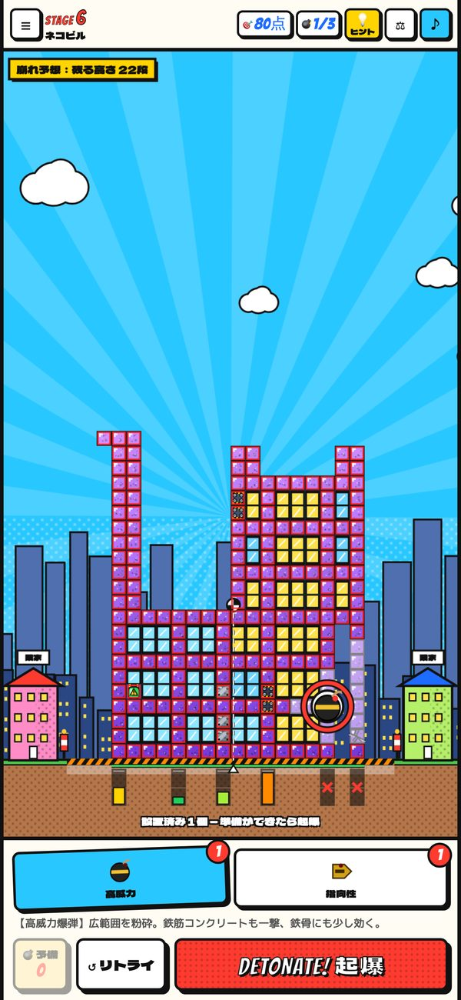
ネコ、キリン、ロボット、ロケット
ステージは全100面。ネコやキリン、ロボット、ロケットの形をしたビルや、足のたくさんあるビルが並びます。
手持ちの爆弾は「いちばん少ない数＋1個」。1個多く使えばクリアしやすく、いちばん少ない数で決めると高得点です。
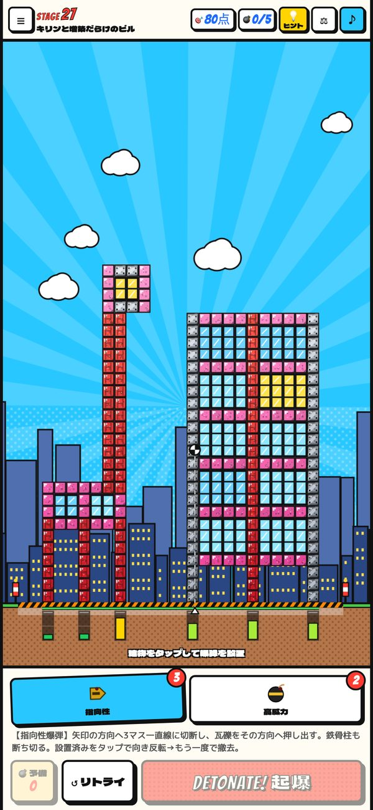
置く場所を、読んで探せる
柱1本ごとにどれだけ重さを支えているかが分かる「荷重メーター」、建物の重心、崩れる予想、指でねらっている間の「ここに置くと 落ちる◯個・残る◯段」。どこに置けばいいかを、理屈で絞り込めます。
道具はどれも無料で、広告もなく、いつでも使えます。ただし予想に入っているのは「どこが支えを失うか」まで。瓦礫がどこへ転がるかは、試してみないと分かりません。
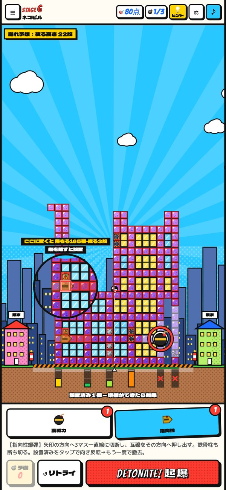
ストンと、まっすぐ沈む
崩れ方は物理で計算しています。細い柱の上に残った建物は倒れ、形のまま残った建物は自分の重さでつぶれて沈みます。置く場所を少し変えるだけで、結果が大きく変わります。
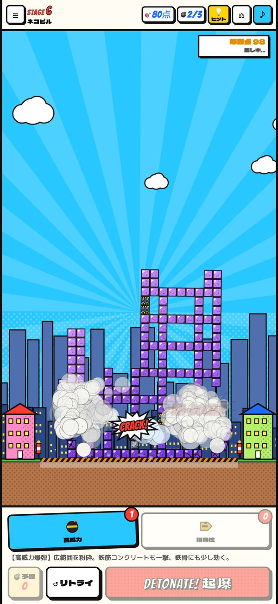
4種類の爆弾と、いろいろな素材
通常爆弾・高威力爆弾・鉄骨も切れる指向性爆弾、落ちていく途中で瓦礫を粉にする時限爆弾。ビルはガラス・木材・コンクリート・鉄筋コンクリート・鉄骨でできていて、素材ごとに効く爆弾が違います。
爆風で誘爆するガスボンベや、どの爆弾も効かない補強鋼板、弱っているひびなどの仕掛けも出てきます。
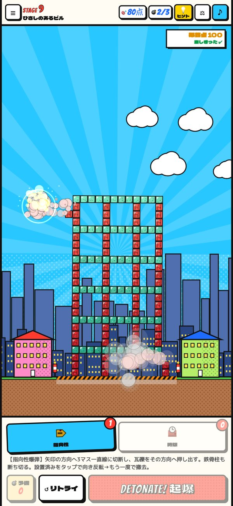
星3つ、職人メダル、ブーモルハウス
爆芸点で星が1〜3つ。ヒントを見ずに、いちばん少ない数の爆弾で星3つを取ると「職人メダル」がもらえます。100点満点のパーフェクト、ガスボンベを全部誘爆させる大連鎖のメダルも。
集めたどんぐりで、ブーモルの家「ブーモルハウス」を広げていけます。
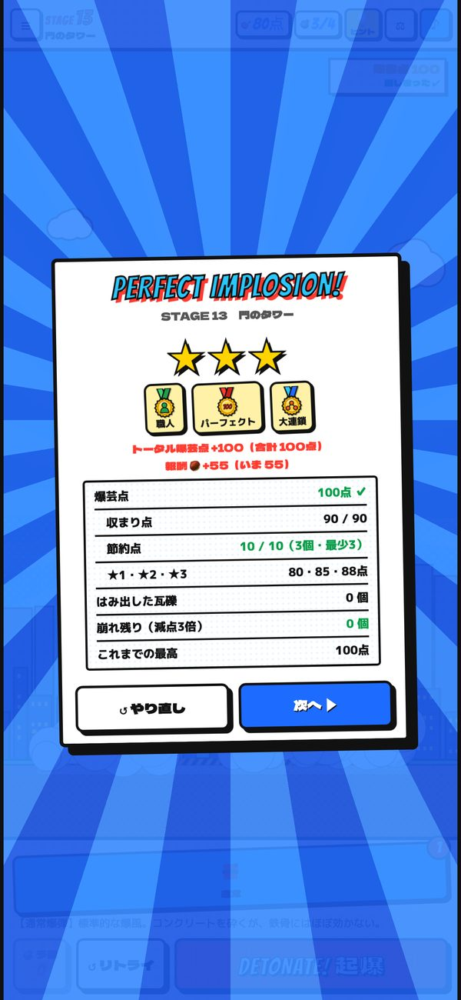
モグラの新入り「ブーモル」が、ボムテツ親方のもとで一人前の発破職人をめざすストーリー付き（全10話）。途中から、となり町のモルミーちゃんも登場します。
画面
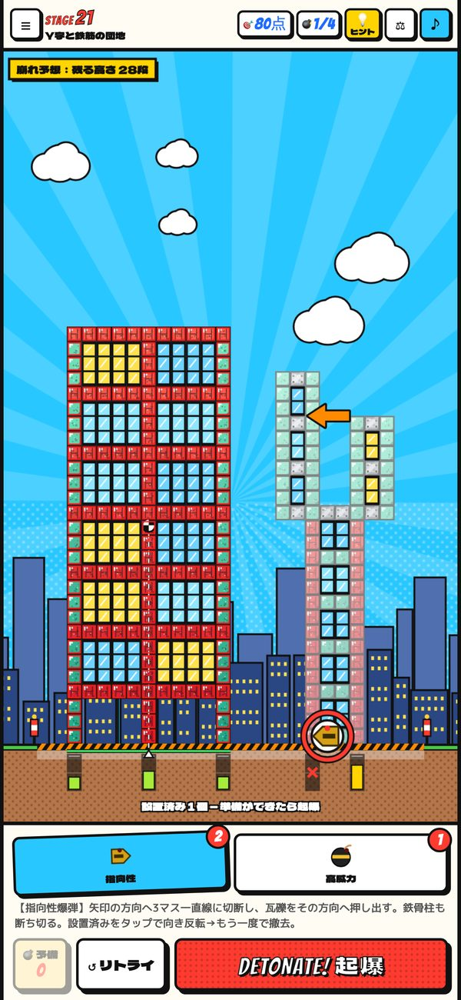
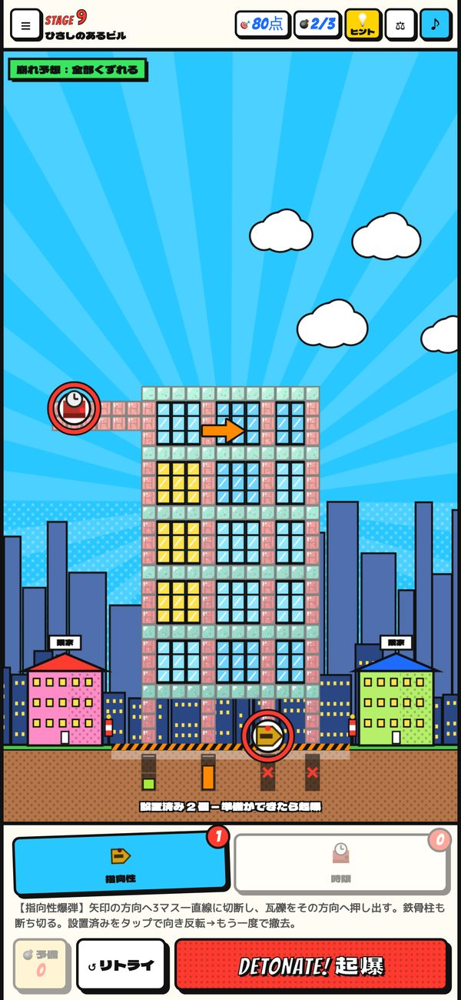
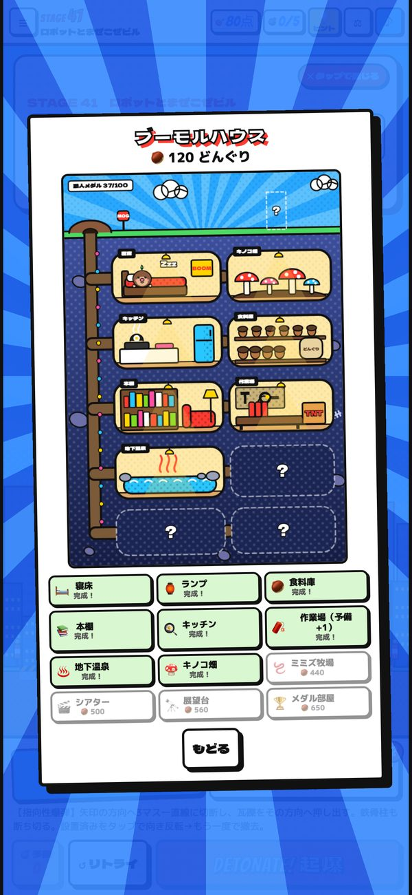
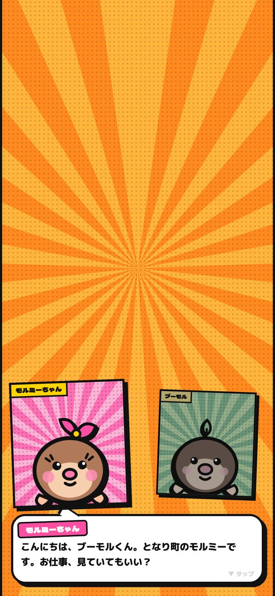
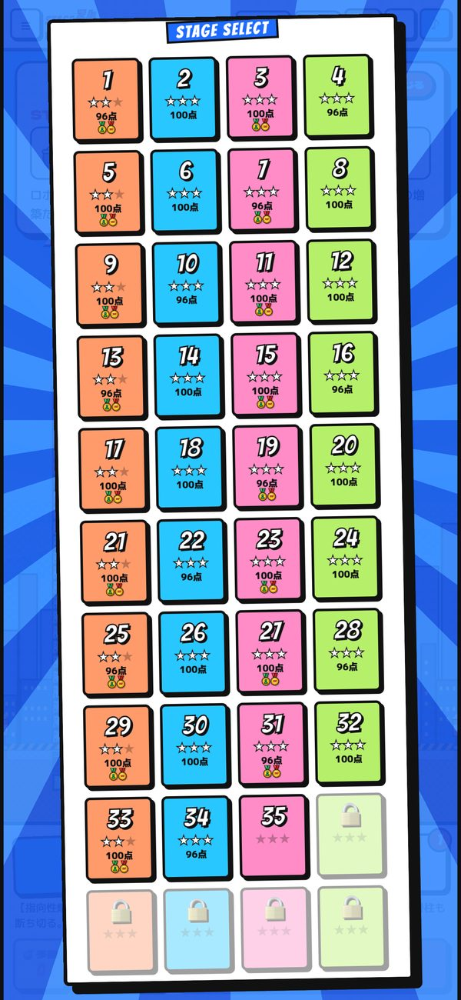
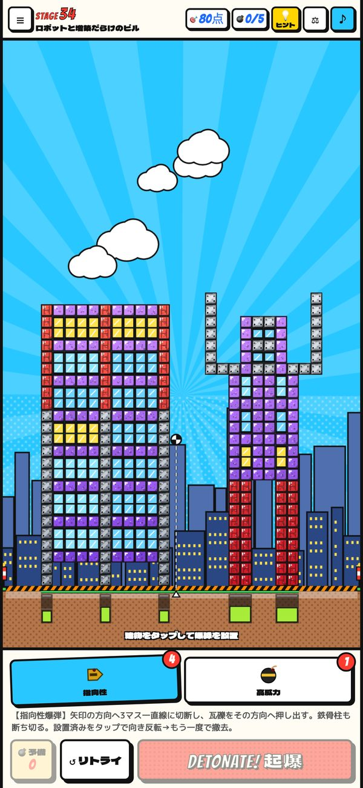
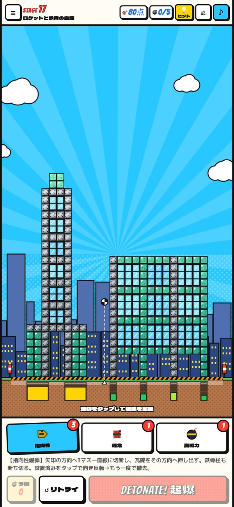
※ 画面は開発中のものです。
料金
プライバシー
ゲームの記録は iPhone の中だけに保存しています。
- 対応
- iPhone
- 言語
- 日本語・英語・ドイツ語・韓国語・中国語（繁体字）
- カテゴリ
- ゲーム（パズル）
- 料金
- 無料（広告あり）
よくある質問・サポート
機種を変えたら記録は引き継げますか？
ゲームの記録は端末の中だけに保存しているため、引き継ぎには対応していません。
アプリを削除するとどうなりますか？
記録もいっしょに削除されます。
音が出ません。
本体の消音スイッチ（サイレントモード）と音量をご確認ください。
不具合やご要望は、こちらへお送りください。お使いの端末と iOS のバージョンを書いていただけると助かります。
MORK STUDIO：morkstudio@icloud.com
開発記
発破職人ブーモル
ビルのどこに爆弾を仕掛ければ、まっすぐ真下へ崩れる？ 物理で崩れる爆破解体パズル。全100面、置き場所を探す道具つき。無料で遊べます。
English
BOOMOLE: Blast Master is a physics-based building demolition puzzle. Choose where to place the charges so the building collapses straight down.
Support: morkstudio@icloud.com ・ Privacy Policy